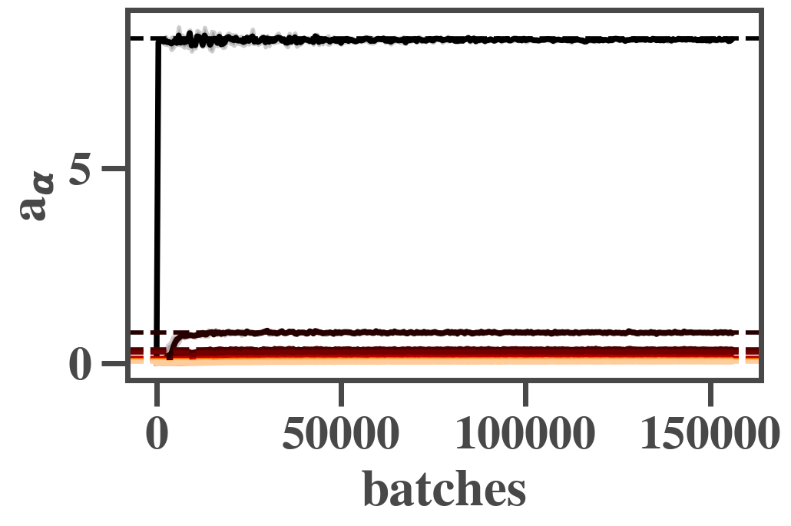
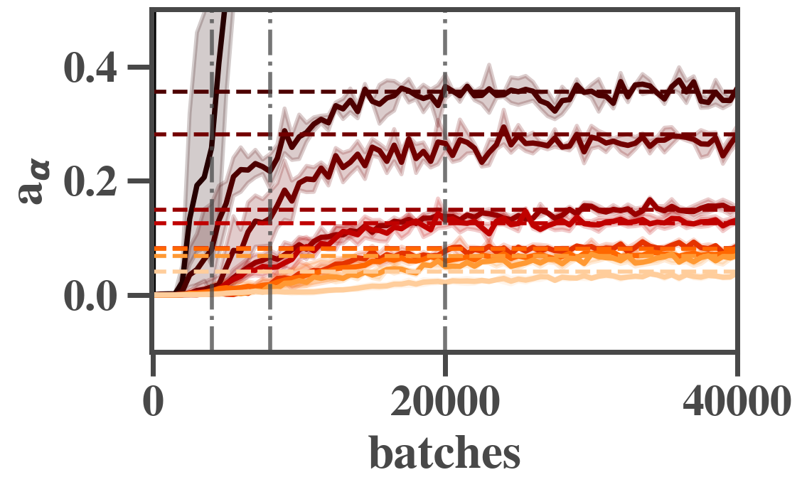
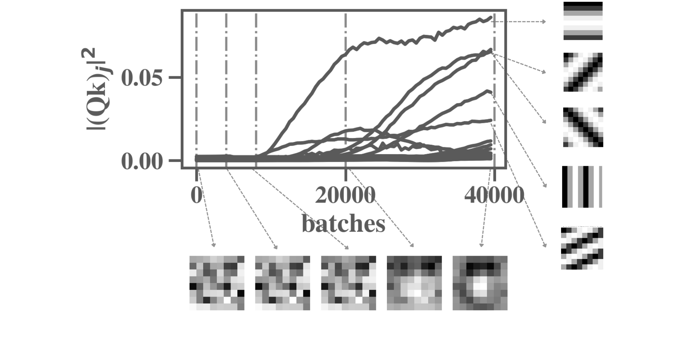
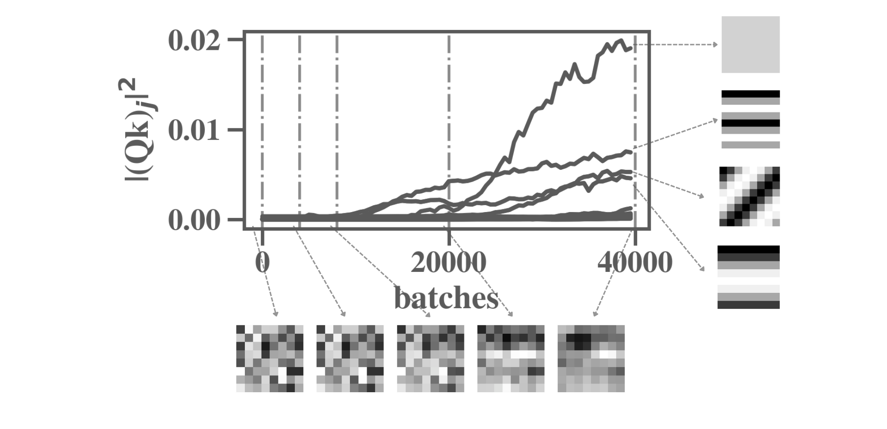

zero-padding
he-uniform initializer * 0.1 (different dynamics for different initializers!)
batchsize 32
2D conv, 16 output channels, 8x8, Relu
2D conv, 16 output channels, 8x8, Relu
maxpool 2x2
2D conv, 16 output channels, 8x8, Relu
2D conv, 16 output channels, 8x8, Relu
maxpool 2x2
fully connected, 16 nodes, Relu
fully connected, 10 nodes, no activation
Averaged over 3 trials.
The high variance in the test loss curve stems from the fact that we evaluated it on a subset of the complete test set (to update).
Note that overfitting starts around batch 40000.
10 modes colored from dark to light (average NOT removed beforehand, thus 10 modes remain). The horizontal dotted lines denote corresponding ground truth singular values s.


First image: analysis of evolution of the FT spectrum of a random kernel in the first conv. layer (shown up to start of overfitting). Evolution of the square of the magnitue of the 64 Fourier coefficients of the 8x8 kernel (middle), visualization of kernel at selected timepoints (below), visualization of corresponding frequencies (right). Note that the latter visualizations do not include the shift that is associated to the phase of the FT coefficient.

Second image: analysis of evolution of the FT spectrum of a random kernel in the third conv. layer (shown up to start of overfitting)

Note that the layer